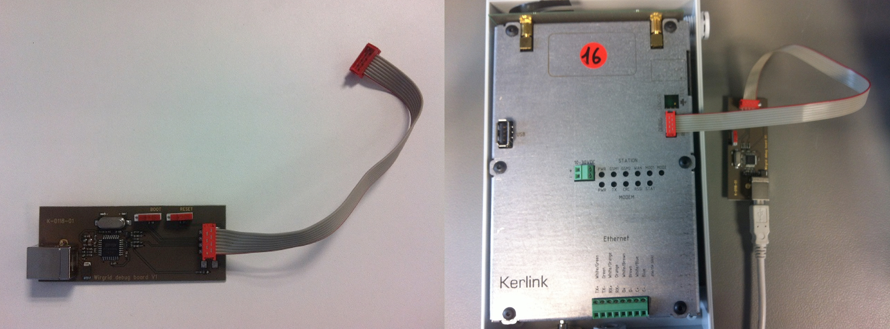

Configuration
Outdated: this section documents The Things Network V2, which is no longer maintained. See the documentation for The Things Stack V3, or browse the V2 docs index.
If you bought one of these gateways directly from Kerlink, you can apply for access to the Kerlink Wiki by sending an email to support@kerlink.fr mentioning the serial number of your gateway.
If you have access to the Kerlink wiki it is recommended to follow the firmware upgrade and packet forwarder installation steps from there. This will ensure you are running the latest and most reliable version.
Packet forwarders #
Multiple packet forwarders are supported by the Kerlink gateway to forward data to TTN:
- Kerlink Semtech Packet Forwarder (SPF) - uses UDP to forward data to a single LoRaWAN network server
- Poly Packet Forwarder - can forward to multiple LoRaWAN network servers using UDP
- Multi-protocol Packet Forwarder - can forward to multiple LoRaWAN network servers using either UDP or MQTT
- Kerlink Common Packet Forwarder - uses UDP to forward packets to the LoRaWAN network server, but stores a buffer of packets on the gateway when the internet connection to the network server is unavailable. It sends these buffered packets when the connection is restored. This can cause downlink messages from the network server to be late and confuse application layer algorithms as well as Adaptive Data Rate.
The recommended packet forwarder is the Kerlink SPF one as this is the most widely used and supported by Kerlink. The rest of this tutorial will assume you are installing the SPF, but the same steps should work for the other packet forwarders too.
Install SPF #
You must be running Kerlink firmware v3.1 or later. If you are unsure, follow the steps to upgrade the firmware.
- Format a USB flash drive as FAT32.
- Download
produsb_wirnet_v3.6.zipfrom here. - Extract
produsb_wirnet_v3.6.zipto the flash drive, making sure the only files on the flash drive isprodusb.shandprodusb_wirnet_v3.6.md5. - Download
dota_spf_3.1.0-klk16_4.1.3-klk8_wirnet_ttn.tar.gzfrom here. - Copy
dota_spf_3.1.0-klk16_4.1.3-klk8_wirnet_ttn.tar.gzto the flash drive without extracting it. - Safely remove the USB flash drive from your computer.
- Make sure your Kerlink gateway is booted up. The safest is to wait two minutes after you powered it up.
- Plug the USB flash drive into the USB port on the Kerlink gateway. If the flash drive has a light it will start flashing.
- If you press the Test button on the gateway you will see the MOD1 and MOD2 lights flashing. When they stop the installation is complete. This will take a minute or two.
- When the installation is done, or after a couple of minutes, you can remove the USB flash drive.
- On the flash drive there should now be a file called produsb.log containing the serial number of your gateway.
The dota_spf_3.1.0-klk16_4.1.3-klk8_wirnet_ttn.tar.gz file is preconfigured with the frequency plan for TTN. There is therefore no need to further configure your gateway. It should already be forwarding data to TTN.
Register the gateway on the TTN Console #
To register the gateway on the console you should choose I’m using the legacy packet forwarder. In the Gateway EUI field fill in 7276ff000 followed by the 7 digits of the gateway’s serial number. For example 7276ff00080E0000.
When the packet forwarder is running it reports at least every 30 seconds to TTN. The activity of all your gateways can be checked on the Console.
Connect with the Gateway
If you want to manually modify the configuration files on the gateway you need to log into it. Normally this is not necessary.
SSH-Serial #
You will need to know the IP address of the gateway. You can obtain this from your network’s router (home network) or your DHCP server. Logon to the gateway by using the SSH protocol, on a Mac or Linux system just use the Terminal and run ssh root@10.1.0.117 (substitute by the correct IP-address). On a Windows PC you can use Putty.
One option to have better control of the IP address which the gateway uses is by doing Internet Connection Sharing on your computer. Or use a WiFi router to which both the gateway and your computer connects.
WIRGRID #
The serial interface (linux console) of the gateway can also be accessed by using the WIRGRID debug tool. This tool connects to your PC by a USB (type B > A) cable.

To build your own Wirgrid see this forum topic.
- Connect the WIRGRID tool to your gateway and PC
- Look up to which port the WIRGRID is assigned to
- Open a serial connection with the following settings:
- Baudrate: 115200
- Data length: 8
- Parity: none
- Stop bit: 1
- Flow control: none
- When the connection opens up, log in with the following credentials
- Login:
root - Password:
root(if using 2.x firmware) orpdmk-0followed by the last 7 characters of the gateway serial number (if using 3.x firmware)
- Login:
On Linux you can connect to the debug console with the command screen /dev/tty.usbXXXX 115200 (where XXXX is the actual port).
Gateway username and password #
Firmware version 2.x:
- Username:
root - Password:
root
Firmware v3.1, v3.3:
- Username:
root - Password:
pdmk-0followed by the last 7 characters of the gateway’s serial number in lower case. Ex:pdmk-080e0000.
Firmware v3.6:
- Username:
root - Password:
pdmk-0followed by the last 7 characters of the gateway’s serial number in upper case. Ex:pdmk-080E0000.
Change root password
You can change the root password using the following command.
passwdIf you ever forget the new password you will need to perform a factory reset to reset the password to the default one.
Check if the Packet forwarder is running #
Use the following command on the gateway to check whether data is being sent and received:
tcpdump -AUq port 1700
The output must be somewhat similar to the following. Check if both inbound as well as outbound traffic are shown:
listening on eth0, link-type EN10MB (Ethernet), capture size 65535 bytes
10:40:51.571795 IP 10.10.1.84.59170 > 52.169.76.203.1700: UDP, length 202
E.....@.@...
.T4.L..“....*=.a.....K....{“rxpk”:[{“tmst”:214104396,“chan”:7,“rfch”:0,“freq”:867.900000,“stat”:1,“modu”:“LORA”,“datr”:“SF7BW125",“codr”:“4/5",“lsnr”:10.0,“rssi”:-67,“size”:19,“data”:“QJYnASYAMR4BWQCbBgrDXzkRoQ==“}]}
10:40:51.592416 IP 52.169.76.203.1700 > 10.10.1.84.59170: UDP, length 4
E.. ..@.4...4.L.
.T...“.....a................@R.Y
10:40:52.646562 IP 10.10.1.84.55114 > 52.169.76.203.1700: UDP, length 12
E..(..@.@...
.T4.L..J....9%..@....K....
10:40:52.666952 IP 52.169.76.203.1700 > 10.10.1.84.55114: UDP, length 4
E.. .k@.4...4.L.
.T...J..S...@................:lX
10:41:02.011529 IP 10.10.1.84.59170 > 52.169.76.203.1700: UDP, length 113
E....“@.@..k
.T4.L..“...y.c.......K....{“stat”:{“time”:“2017-04-24 08:41:02 GMT”,“rxnb”:7,“rxok”:6,“rxfw”:6,“ackr”:100.0,“dwnb”:0,“txnb”:0}}
10:41:02.032521 IP 52.169.76.203.1700 > 10.10.1.84.59170: UDP, length 4
E.. ..@.4...4.L.
.T...“...)......................
Firewall configuration #
When using the wirnet_v3.1 firmware, the firewall is activated by default. In some cases the firewall might interfere with downlinks or SSH access. We can simply disable the firewall:
- Open the file
/etc/sysconfig/network - Change
FIREWALL=yestoFIREWALL=no - reboot the gateway
Configure the packet forwarder #
The SPF config files are located in /mnt/fsuser-1/spf/etc. The local_conf.json file is read only, so you can not change the settings in there. The global_conf.json should contain the LoRaWAN network server address and ports, as well as the TTN frequency plan for your region. This file should be similar to the ones available here.
Troubleshooting #
If you still encounter problems with the packet forwarder, head to the Troubleshooting page of the packet forwarder. You can also try the TTN Forum and the Kerlink Wiki.